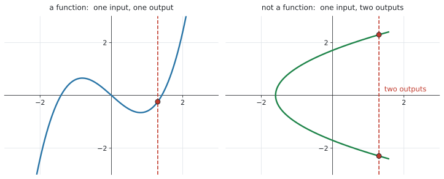
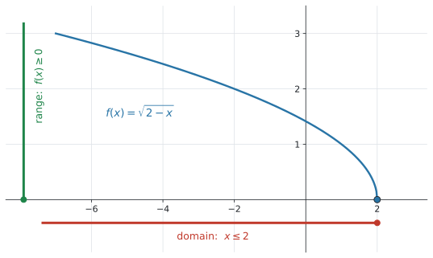
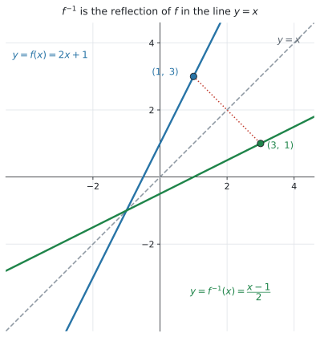
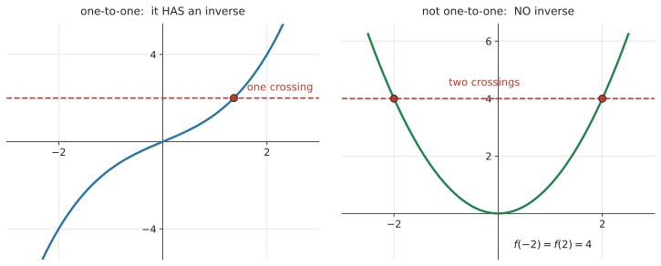

SL 2.2 — Functions, domain, range and inverse functions（関数・定義域・値域・逆関数）
- function（関数）とは何かを説明できる。1つの入力に、出力は1つだけ。
- function notation（\(f(x)\)、\(v(t)\)、\(C(n)\)）を読み、\(f(3)\) のような値を求められる。
- domain（定義域）と range（値域）を、式からもグラフからも答えられる。
- 関数を mathematical model として使い、文脈から domain を決められる。
- inverse function（逆関数）が「もとにもどす」ものだと分かり、\(f^{-1}(x)\) の記号を使える。
- \(f(x) = 10\) を解くことと \(f^{-1}(10)\) を求めることは同じだと分かる。
- \(f^{-1}\) のグラフが \(y = x\) についての対称移動であることを説明できる。
公式集の Topic 2 の欄には、SL 2.1 と SL 2.5 の式しかありません。 SL 2.2 の欄はありません。
この項目は式を使う項目ではなく、言葉と考え方の項目です。覚えるのは記号の意味だけです。
シラバスの Topic 2 の冒頭に、この Topic 全部にかかる大事なことが3つ書かれています。SL 2.2 から SL 2.6 まで、ずっと効いてきます。
(1) 断りがなければ、domain は「その式が使えるいちばん広い範囲」
the domain will be the largest possible domain for which a function is defined unless otherwise stated; this will usually be the real numbers.
つまり「\(f(x) = 3x - 5\) の domain は？」と聞かれたら、答えは「すべての実数」です。式が使えなくなる場所がないからです。
(2) シラバスに載っていない形の関数も、グラフをかかせることがある
questions may be set requiring the graphing of functions that do not explicitly appear on the syllabus
知らない形が出ても、電卓に入れればグラフは出ます。 あわてないでください。
(3) 手で式変形するより、電卓を使う
students should be given the opportunity to use technology such as graphing packages and graphing calculators … rather than using elaborate analytical techniques
AI はここが AA と一番違うところです。込み入った式変形は求められていません。
The idea
1. function とは ── 「入力1つに、出力1つ」
function（関数）は、「入れると、何か1つ出てくる仕組み」です。
大事なのは「1つだけ」というところです。
同じ入力を入れたら、出てくる答えはいつも同じ、ただ1つ。

図 1 で見分け方が分かります。縦の線を1本引いてみて、グラフと2回以上ぶつかったら function ではありません。
- 左 … どこに縦線を引いても、ぶつかるのは1回だけ → function
- 右 … \(x = 1.3\) で2回ぶつかる → 入力1つに出力が2つ → function ではない
この見分け方を vertical line test（垂直線テスト）と呼びます。
\(f(x) = x^2\) では、\(f(2) = 4\) と \(f(-2) = 4\) で、出力が同じになります。
これは function です。 禁止されているのは「1つの入力から、2つの出力」であって、「2つの入力から、同じ出力」ではありません。
この違いは、あとの inverse function のところで効いてきます。
2. function notation ── \(f(x)\) の読み方
シラバスに、3つの例が挙がっています。
\[ f(x), \qquad v(t), \qquad C(n) \]
カッコの中が入力です。文字は場面によって変わります。
| 書き方 | 読み方 |
|---|---|
| \(f(x)\) | \(x\) を入れたときの、\(f\) の出力 |
| \(v(t)\) | 時刻 \(t\) での速さ（velocity） |
| \(C(n)\) | \(n\) 個作ったときの費用（cost） |
\(f(3)\) は掛け算ではありません。 「\(x\) のところに \(3\) を入れる」という意味です。
\(f(x) = 3x - 5\) なら、
\[ f(3) = 3(3) - 5 = 4 \]
カッコの中の数を、式の \(x\) に全部入れる。 これだけです。
「\(f(x) = 16\) を解く」は、逆向きです
| 聞かれ方 | 試験での英語 | やること |
|---|---|---|
| \(f(4)\) を求めよ | Find \(f(4)\). |
\(x = 4\) を入れて、出力を出す |
| \(f(x) = 16\) を解け | Solve \(f(x) = 16\). |
出力が \(16\) になる入力を探す |
この2つは向きが反対です。どちらを聞かれているか、問題文をよく読んでください。後者は inverse function の話につながります。
3. domain と range
| 英語 | 日本語 | 意味 |
|---|---|---|
| domain | 定義域 | 入れてよい \(x\) の範囲 |
| range | 値域 | 出てくる \(f(x)\) の範囲 |
domain は横軸（\(x\)）、range は縦軸（\(f(x)\)）の話です。ここを取り違えないでください。
シラバスの例で見ます
シラバスに、この例がそのまま載っています。
Example: \(f(x) = \sqrt{2 - x}\), the domain is \(x \leq 2\), range is \(f(x) \geq 0\).

domain がなぜ \(x \leq 2\) なのか。 ルートの中は負にできないからです。
\[ 2 - x \geq 0 \quad \Rightarrow \quad x \leq 2 \]
range がなぜ \(f(x) \geq 0\) なのか。 ルートの答えは負にならないからです。図 2 のグラフが、\(x\) 軸より下に行かないことを見てください。
シラバスにも書かれています。
A graph is helpful in visualizing the range.
range を式だけで考えると、まず間違えます。 電卓でグラフをかいて、「縦にどこからどこまで届いているか」を見てください。
domain は横の広がり、range は縦の広がり。 グラフを見れば、両方とも一目で分かります。
断りがなければ「いちばん広い範囲」
前に書いた Topic 2 の決めごと (1) です。式が使えなくなる場所だけを外します。
| 式 | 使えない場所 | domain |
|---|---|---|
| \(f(x) = 3x - 5\) | なし | すべての実数 |
| \(f(x) = \sqrt{x - 5}\) | 中が負になるところ | \(x \geq 5\) |
| \(f(x) = \dfrac{1}{x - 3}\) | 分母が \(0\) | \(x \neq 3\) |
気をつけるのは2つだけです。
- ルートの中は \(0\) 以上
- 分母は \(0\) にできない
4. 文脈が domain を決めることもあります
シラバスの Content 欄に “The concept of a function as a mathematical model” とあります。AI らしいところです。
現実の場面では、式は使えても、意味を持たない値があります。
\(n\) 個の商品を作る費用が \(C(n) = 500 + 30n\)（ドル）
式としては \(n = -4\) でも計算できますが、\(-4\) 個作ることはできません。 また、商品は整数個です。
\[ \text{domain}: \quad n \geq 0 \ (\text{整数}) \]
in this context と書かれていたら、現実を見てください
State the domain in this context と聞かれたら、数学的に可能な範囲ではなく、意味を持つ範囲を答えます。
- 個数、人数 … \(0\) 以上の整数
- 時間 … ふつう \(t \geq 0\)、終わりが決まっていれば \(0 \leq t \leq (\text{終わり})\)
- 長さ、重さ … 正の数
「なぜその範囲なのか」を1行そえると、より確実です。
5. inverse function ── もとにもどす
シラバスの言葉は、こうです。
Informal concept that an inverse function reverses or undoes the effect of a function.
inverse function（逆関数）は、もとの関数がやったことを、元にもどすものです。記号は \(f^{-1}(x)\) と書きます。
記号の意味
\[ f(a) = b \qquad \Longleftrightarrow \qquad f^{-1}(b) = a \tag{1}\]
入力と出力を入れかえるだけです。
\(f(1) = 3\) なら、\(f^{-1}(3) = 1\) です。自分で書き換えられるようにしましょう。
シラバスに、この例がそのまま載っています。
Example: Solving \(f(x) = 10\) is equivalent to finding \(f^{-1}(10)\).
「出力が \(10\) になる入力を探す」という、まったく同じ作業だからです（表 2 の右側）。
ですから、\(f^{-1}\) の式を求めなくても、\(f^{-1}(10)\) の値は出せます。 方程式 \(f(x) = 10\) を解けばよいのです。電卓で解いて構いません（SL 1.8）。
グラフは \(y = x\) についての対称移動
シラバスの Content 欄に、はっきり書かれています。
Inverse function as a reflection in the line \(y = x\), and the notation \(f^{-1}(x)\).

図 3 では、\(f(x) = 2x + 1\) の上の点 \((1,\ 3)\) が、\(f^{-1}\) の上では \((3,\ 1)\) になっています。
\[ (a,\ b) \quad \longrightarrow \quad (b,\ a) \]
座標を入れかえるだけです。\(y = x\) の線が、ちょうど鏡になっています。
domain と range も入れかわります
シラバスに書かれています。
the domain of \(f^{-1}(x)\) is equal to the range of \(f(x)\)
入力と出力が入れかわるのですから、当然そうなります。
具体例で見ます。 \(f(x) = x^{2} - 3\)（ただし \(x \geq 0\)）としましょう。
- domain は \(x \geq 0\)（問題でそう決められています）
- range は \(y \geq -3\)。\(x = 0\) のとき \(-3\) で、そこからずっと増えていくからです
この \(2\) つが、\(f^{-1}\) ではそっくり入れかわります。
| domain | range | |
|---|---|---|
| \(f\) | \(x \geq 0\) | \(y \geq -3\) |
| \(f^{-1}\) | \(x \geq -3\) | \(y \geq 0\) |
検算。 \(f(2) = 2^{2} - 3 = 1\) なので、\(f^{-1}(1) = 2\)。入力の \(1\) は \(x \geq -3\) の中、出力の \(2\) は \(y \geq 0\) の中 ✓
逆関数がある関数、ない関数
シラバスに書かれています。
inverse functions exist for one to one functions
one-to-one（1対1）とは、「違う入力からは、必ず違う出力が出る」という意味です。
\(f(x) = x^2\) を考えます。\(f(2) = 4\) で、\(f(-2) = 4\)。出力 \(4\) から、入力にもどれません。 \(2\) なのか \(-2\) なのか決まらないからです。
だから \(f(x) = x^2\)（すべての実数で）には逆関数がありません。
グラフで見分けます ── horizontal line test

図 4 がその見分け方です。横の線を1本引いてみて、グラフと2回以上ぶつかったら one-to-one ではありません。 これを horizontal line test（水平線テスト）と呼びます。
- 左 … どこに横線を引いても、ぶつかるのは1回だけ → one-to-one → 逆関数がある
- 右 … \(y = 4\) で2回ぶつかる → 出力1つに入力が2つ → 逆関数がない
名前が似ているので、何を調べる線なのかをはっきりさせておいてください。
| テスト | 引く線 | 調べていること |
|---|---|---|
| vertical line test | 縦 | そもそも function か |
| horizontal line test | 横 | one-to-one か（＝逆関数があるか） |
縦の線ははじめの節、横の線はここ。順番も、この順で使います。 function でないものに、逆関数の話をしても意味がないからです。
シラバスの言葉は Informal concept（大まかな考え方）です。式を変形して \(f^{-1}(x)\) を求める手順は、Content 欄に挙げられていません。
AI SL で聞かれるのは、次の4つです。
- \(f^{-1}(b)\) の値（\(f(a) = b\) から読む、または \(f(x) = b\) を解く）
- \(f^{-1}\) のグラフ上の点（座標を入れかえる）
- \(f^{-1}\) の domain と range（\(f\) のものと入れかえる）
- \(y = x\) についての対称移動であること
この4つができれば十分です。
Why it works
ここでは、なぜ \(f^{-1}\) のグラフが \(y = x\) の対称移動になるのかだけを説明します。
\(f\) のグラフの上に、点 \((a,\ b)\) があるとします。これは \(f(a) = b\) という意味です。
式 1 より、このとき \(f^{-1}(b) = a\) です。つまり \(f^{-1}\) のグラフの上には、点 \((b,\ a)\) があることになります。
\(f\) の上の点をぜんぶ「座標を入れかえた点」に置きかえると、\(f^{-1}\) のグラフになる、ということです。
では、\((a, b)\) を \((b, a)\) にする移動とは何でしょうか。
\(y = x\) の線は、縦の座標と横の座標が等しい点の集まりです。\((a, b)\) からこの線に垂直に下ろして、同じだけ向こう側へ行くと、ちょうど \((b, a)\) に着きます。
\[ (a,\ b) \quad \xrightarrow{\ y = x \text{ で折り返す}\ } \quad (b,\ a) \]
図 3 の点線が、まさにこの折り返しです。\((1, 3)\) と \((3, 1)\) を結ぶ線が、\(y = x\) と直角に交わっていることを確かめてみてください。
Worked examples
問題文は英語です。意味が理解できなかったら、問題文の下の「日本語訳」を開いてください。解説は日本語です。
例題 1 A function is defined by \(f(x) = 3x - 5\).
(a) Find \(f(4)\).
(b) Find \(f(-2)\).
(c) Solve \(f(x) = 16\).
(d) Write down the value of \(f^{-1}(16)\).
日本語訳
関数が \(f(x) = 3x - 5\) で定められています。
(a) \(f(4)\) を求めなさい。
(b) \(f(-2)\) を求めなさい。
(c) \(f(x) = 16\) を解きなさい。
(d) \(f^{-1}(16)\) の値を書きなさい。
(a)(b) \(x\) のところに数を入れるだけです。
\[ f(4) = 3(4) - 5 = 12 - 5 = 7 \]
\[ f(-2) = 3(-2) - 5 = -6 - 5 = -11 \]
負の数はカッコを付けて代入してください。\(3 \times -2\) と書くと符号を落としやすくなります。
(c) 今度は逆向きです（表 2）。出力が \(16\) になる \(x\) を探します。
\[ 3x - 5 = 16 \]
\[ 3x = 21 \]
\[ x = 7 \]
(d) (c) がそのまま答えです。
\[ f^{-1}(16) = 7 \]
\(f(x) = 16\) を解くことと、\(f^{-1}(16)\) を求めることは同じだからです。\(f^{-1}\) の式を作る必要はありません。
(a) \(f(4) = 3(4) - 5 = 7\)
(b) \(f(-2) = 3(-2) - 5 = -11\)
(c) \(3x - 5 = 16\), so \(3x = 21\) and \(x = 7\)
(d) \(f^{-1}(16) = 7\)
例題 2 A function is defined by \(f(x) = \sqrt{2 - x}\).
(a) Write down the domain of \(f\).
(b) Write down the range of \(f\).
(c) Find \(f(-7)\).
日本語訳
関数が \(f(x) = \sqrt{2 - x}\) で定められています。
(a) \(f\) の domain を書きなさい。
(b) \(f\) の range を書きなさい。
(c) \(f(-7)\) を求めなさい。
(a) ルートの中は負にできません（表 4）。
\[ 2 - x \geq 0 \]
\[ 2 \geq x, \qquad \text{つまり} \qquad x \leq 2 \]
不等号の向きに注意してください。 \(-x\) を移すときに向きが変わります。心配なら \(x = 0\)（\(\sqrt{2}\) が出る、OK）と \(x = 5\)（\(\sqrt{-3}\) になる、だめ）で確かめると、\(x \leq 2\) で合っていると分かります。
(b) ルートの答えは負になりません。
\[ f(x) \geq 0 \]
図 2 のグラフのとおり、\(x\) 軸より下には行きません。
グラフをかいて確認するとよいです。 電卓に f1(x) = sqrt(2 - x) と入れれば、\(x\) 軸の上にしか線がないことが目で見えます。
(c) 代入するだけです。
\[ f(-7) = \sqrt{2 - (-7)} = \sqrt{9} = 3 \]
\(2 - (-7) = 9\) です。\(-5\) としないように、カッコを付けて書いてください。
(a) \(2 - x \geq 0\), so the domain is \(x \leq 2\)
(b) The range is \(f(x) \geq 0\)
(c) \(f(-7) = \sqrt{2 - (-7)} = \sqrt{9} = 3\)
例題 3 The function \(f\) is defined by \(f(x) = x^{2} - 4x + 1\) for \(0 \leq x \leq 5\).
(a) Sketch the graph of \(f\) using your GDC.
(b) Write down the minimum value of \(f(x)\).
(c) Hence write down the range of \(f\).
日本語訳
関数 \(f\) が、\(0 \leq x \leq 5\) の範囲で \(f(x) = x^{2} - 4x + 1\) と定められています。
(a) GDC を使って \(f\) のグラフをかきなさい。
(b) \(f(x)\) の最小値を書きなさい。
(c) よって、\(f\) の range を書きなさい。
（Hence は「いまの答えを使って」という指示です。前の答えを必ず使ってください。）
この問題は、domain が問題文で指定されています。 「いちばん広い範囲」ではありません。
(a) 電卓に f1(x) = x^2 - 4x + 1 と入れます（GDCの使い方）。下に開いた谷の形（放物線）が出ます。
かいたら、domain の両端の座標も読んでおきます。
menu → Trace → Graph Traceカーソルが曲線に乗った状態で \(x\) の値を直接打ちこむと、そこへ飛んで座標が出ます。0 と打てば \((0,\ 1)\)、5 と打てば \((5,\ 6)\) です。
\[ (0,\ 1), \qquad (5,\ 6) \]
この \(2\) つは (c) でそのまま使います。 先に読んでおくと、あとが速くなります。
(b) range はグラフで見ます。谷の底が最小値です。
menu → Analyze Graph → Minimum\[ \text{最小値} = -3 \quad (x = 2 \text{ のとき}) \]
(c) range は縦にどこまで届いているかです。下は最小値、上は端っこを調べます。
domain の両端を代入します。
\[ f(0) = 1, \qquad f(5) = 25 - 20 + 1 = 6 \]
大きいほうは \(f(5) = 6\)。
\[ -3 \leq f(x) \leq 6 \]
\(f(0) = 1\) と \(f(5) = 6\) だけを見て「\(1 \leq f(x) \leq 6\)」と答えるのが、この形の問題で一番多い間違いです。
途中で \(-3\) まで下がっています。 グラフをかけば必ず気づきます。だから (a) でグラフをかかせているのです。
(b) The minimum value is \(-3\) (at \(x = 2\)).
(c) \(f(0) = 1\) and \(f(5) = 6\), so the range is \(-3 \leq f(x) \leq 6\)
例題 4 A taxi company charges a fixed fee plus an amount for each kilometre. The cost, in dollars, of a journey of \(d\) kilometres is given by
\[ C(d) = 3.5 + 1.8d \]
The company only accepts journeys of up to \(20\) km.
(a) Find \(C(6)\) and interpret this value in context.
(b) State the domain of \(C\) in this context.
(c) Find the range of \(C\) in this context.
(d) A journey costs \(\$23.30\). Find the length of the journey.
日本語訳
あるタクシー会社は、定額の基本料金に加えて、\(1\) km ごとの料金をとります。\(d\) km の乗車にかかる費用（ドル）は次の式で表されます。
この会社は、\(20\) km までの乗車しか受けつけません。
(a) \(C(6)\) を求め、その値の意味を文脈の中で説明しなさい。
(b) この文脈での \(C\) の domain を述べなさい。
(c) この文脈での \(C\) の range を求めなさい。
(d) ある乗車の費用が \(\$23.30\) でした。その距離を求めなさい。
（fixed fee は「基本料金」、up to は「〜まで」です。）
(a) \(d = 6\) を入れます。
\[ C(6) = 3.5 + 1.8(6) = 3.5 + 10.8 = 14.3 \]
interpret があるので、言葉が必要です。
試験ではこう書く
A journey of \(6\) km costs \(\$14.30\).
（意味：\(6\) km の乗車は \(\$14.30\) かかる。）
\(14.3\) だけでは点になりません。 単位（ドル）と、何の値なのかを書いてください。
(b) in this context なので、現実に意味のある範囲です。
距離は負にならず、会社は \(20\) km までしか受けません。
\[ 0 \leq d \leq 20 \]
(c) \(C\) は右上がりの直線（傾き \(1.8 > 0\)）なので、端が最小と最大になります。
\[ C(0) = 3.5, \qquad C(20) = 3.5 + 1.8(20) = 3.5 + 36 = 39.5 \]
\[ 3.5 \leq C(d) \leq 39.5 \]
例 3 と違って、途中で下がったりしません。 直線だからです。
GDC でグラフをかいて、座標も確かめておきましょう。 f1(x) = 3.5 + 1.8x と入れて、
menu → Trace → Graph Trace0 と打てば \((0,\ 3.5)\)、20 と打てば \((20,\ 39.5)\)。代入した値と合っていれば安心です。
(d) 今度は逆向きです。\(C(d) = 23.3\) を解きます。
\[ 3.5 + 1.8d = 23.3 \]
\[ 1.8d = 19.8 \]
\[ d = 11 \ \text{km} \]
これは \(C^{-1}(23.3)\) を求めたことになります（式 1）。
(a) \(C(6) = 3.5 + 1.8(6) = 14.3\)
A journey of \(6\) km costs \(\$14.30\).
(b) \(0 \leq d \leq 20\)
(c) \(C(0) = 3.5\) and \(C(20) = 39.5\), so \(3.5 \leq C(d) \leq 39.5\)
(d) \(3.5 + 1.8d = 23.3\), so \(1.8d = 19.8\) and \(d = 11\) km
例題 5 The function \(f\) has domain \(0 \leq x \leq 6\) and range \(1 \leq f(x) \leq 13\). The graph of \(f\) passes through the point \((2,\ 5)\).
(a) Write down the value of \(f^{-1}(5)\).
(b) Write down the coordinates of a point on the graph of \(y = f^{-1}(x)\).
(c) Write down the domain and range of \(f^{-1}\).
(d) Describe the geometric relationship between the graphs of \(y = f(x)\) and \(y = f^{-1}(x)\).
日本語訳
関数 \(f\) は domain が \(0 \leq x \leq 6\)、range が \(1 \leq f(x) \leq 13\) です。\(f\) のグラフは点 \((2,\ 5)\) を通ります。
(a) \(f^{-1}(5)\) の値を書きなさい。
(b) \(y = f^{-1}(x)\) のグラフ上の点の座標を \(1\) つ書きなさい。
(c) \(f^{-1}\) の domain と range を書きなさい。
(d) \(y = f(x)\) と \(y = f^{-1}(x)\) のグラフの、図形としての関係を述べなさい。
（geometric relationship は「図形としての関係」です。）
この問題には式がありません。 \(f\) がどんな式かは分からないままです。それでも全部答えられます。
(a) グラフが \((2, 5)\) を通るので、\(f(2) = 5\) です。式 1 より、
\[ f^{-1}(5) = 2 \]
(b) 座標を入れかえるだけです。
\[ (5,\ 2) \]
(c) domain と range が入れかわります（表 5）。
\[ \text{domain of } f^{-1}: \quad 1 \leq x \leq 13 \]
\[ \text{range of } f^{-1}: \quad 0 \leq f^{-1}(x) \leq 6 \]
\(f\) の range が \(f^{-1}\) の domain、\(f\) の domain が \(f^{-1}\) の range です。
(d) Describe なので、言葉で答えます。
試験ではこう書く
The graph of \(y = f^{-1}(x)\) is the reflection of the graph of \(y = f(x)\) in the line \(y = x\).
（意味：\(y = f^{-1}(x)\) のグラフは、\(y = f(x)\) のグラフを直線 \(y = x\) について折り返したものである。）
in the line y = x まで書いてください。 「対称です」だけでは、何について対称なのかが伝わりません。
(a) \(f^{-1}(5) = 2\)
(b) \((5,\ 2)\)
(c) Domain of \(f^{-1}\): \(1 \leq x \leq 13\). Range of \(f^{-1}\): \(0 \leq f^{-1}(x) \leq 6\)
(d) The graph of \(y = f^{-1}(x)\) is the reflection of the graph of \(y = f(x)\) in the line \(y = x\).
Common errors
\(f(3)\) は代入です。掛け算ではありません。
\(f(x) = 3x - 5\) なら \(f(3) = 3(3) - 5 = 4\) です。
- domain … 横（入れる \(x\)）
- range … 縦（出てくる \(f(x)\)）
「domain は横、range は縦」と、口に出して覚えてください。
\(f(0)\) と \(f(5)\) だけを見て答えると、途中の山や谷を見落とします。
必ずグラフをかいてください。 シラバスにも A graph is helpful in visualizing the range と書かれています。
個数や人数なら \(0\) 以上の整数、距離や時間なら \(0\) 以上です。
in this context と書かれていたら、現実に戻って考えてください。
この \(-1\) は「逆数」ではありません。 「もとにもどす関数」という意味の記号です。
\(f(x) = 2x\) なら \(f^{-1}(6) = 3\) ですが、\(\dfrac{1}{f(6)} = \dfrac{1}{12}\)。まったく別の値です。
\(f\) の range が \(f^{-1}\) の domain です。
入力と出力が入れかわるのだから、範囲も入れかわります。
\(f\) が \((2,\ 5)\) を通るなら、\(f^{-1}\) は \((5,\ 2)\) を通ります。\((2,\ 5)\) のままではありません。
Describe the relationship の答えは、reflection in the line y = x です。
「対称です」だけでは点になりません。 何について対称なのかが要ります。
Using your GDC (TI-Nspire CX II)
シラバスに、こう書かれています。
use technology such as graphing packages and graphing calculators … rather than using elaborate analytical techniques
この項目は、電卓でグラフを見るのが本筋です。
グラフをかいて range を読む
ctrl + doc → 2: Add Graphsf1(x) = に式を入れます。
f1(x) = x^2 - 4x + 1山や谷があるかどうかを、まず目で見ます。 あれば、その値が range の端になります。
menu → Analyze Graph → Minimum
menu → Analyze Graph → Maximum左右の境目を指定すると、頂点の座標が出ます。lower bound? と upper bound? の \(2\) 回、enter を押します（→ SL 2.4）。
\(0 \leq x \leq 5\) のように domain が決まっているときは、グラフの山や谷だけでなく、両端の値も必要です。
- 山・谷 … Analyze Graph で出す
- 両端 … \(f(0)\)、\(f(5)\) を代入して出す
- その中でいちばん小さい値といちばん大きい値が range の端
3つを全部そろえてから答えてください。
値の表を出す
\(f(x)\) の値をいくつか並べて見たいときは、
ctrl + Tでグラフの横に表が出ます。\(x\) を変えると \(f(x)\) がどう動くかが見えるので、range の見当がつきます。
\(f(x) = k\) を解く（＝ \(f^{-1}(k)\) を求める）
\(f^{-1}(k)\) を聞かれたら、方程式 \(f(x) = k\) を解きます（式 1）。
f1(x) に \(f\)、f2(x) に \(k\)（水平な直線）を入れて、
menu → Analyze Graph → Intersection交点の \(x\) 座標が \(f^{-1}(k)\) です。
nSolve は、解を \(1\) つしか返しません
SL 1.8 でやった nSolve でも解けます。ただし nSolve が返すのは \(1\) つだけです。
\(f(x) = k\) の解が \(2\) つ以上あるとき（放物線などがそうです）、もう片方は出てきません。 「解は \(1\) つだった」と思いこんでしまうのが、いちばん危ないところです。
グラフの Intersection なら、交点を \(1\) つずつ拾えます。 画面に交点がいくつ見えているかを、まず目で数えてください。
nSolve を使うなら、探す範囲を指定すると別の解も出せます。
nSolve(f1(x) = 6, x, 3, 8)最後の \(2\) つが「\(x\) を \(3\) から \(8\) のあいだで探す」という指定です。
画面に入らないとき
menu → Window/Zoom → Zoom - Fitグラフが見えていないと、range は読めません。 まずは全体が見える大きさにしてください。
Exercises
各問題に、折りたたみが3つ付いています。日本語訳、解答例（答案用紙に書くべきこと。英語です）、解説（なぜそうなるか。日本語です）。
まず自分で解いて、次に解答例と見くらべてください。解説は、合わなかったときだけ開けば十分です。
1 A function is defined by \(f(x) = 5 - 2x\).
(a) Find \(f(3)\).
(b) Find \(f(-1)\).
(c) Solve \(f(x) = 11\).
日本語訳
関数が \(f(x) = 5 - 2x\) で定められています。
(a) \(f(3)\) を求めなさい。
(b) \(f(-1)\) を求めなさい。
(c) \(f(x) = 11\) を解きなさい。
(a) \(f(3) = 5 - 2(3) = -1\)
(b) \(f(-1) = 5 - 2(-1) = 7\)
(c) \(5 - 2x = 11\), so \(-2x = 6\) and \(x = -3\)
(a)(b) 代入するだけです。(b) は \(-2 \times (-1) = +2\) なので \(5 + 2 = 7\)。符号が2回変わるところが引っかかりやすいので、カッコを付けて書いてください。
(c) 出力から入力を探す、逆向きの問題です。
\[-2x = 11 - 5 = 6 \quad \Rightarrow \quad x = -3\]
両辺を \(-2\) で割るとき、符号が変わります。
検算。 \(f(-3) = 5 - 2(-3) = 5 + 6 = 11\) ✓
2 A function is defined by \(g(x) = x^{2} + 3\) for all real values of \(x\).
(a) Find \(g(4)\) and \(g(-4)\).
(b) Explain why \(g\) does not have an inverse function.
日本語訳
関数が、すべての実数 \(x\) について \(g(x) = x^{2} + 3\) と定められています。
(a) \(g(4)\) と \(g(-4)\) を求めなさい。
(b) \(g\) に逆関数がない理由を説明しなさい。
(a) \(g(4) = 4^{2} + 3 = 19\) and \(g(-4) = (-4)^{2} + 3 = 19\)
(b) Since \(g(4) = g(-4) = 19\), the function is not one to one. The output \(19\) comes from two different inputs, so it is not possible to reverse the function and \(g\) has no inverse.
(a) \((-4)^2 = 16\) です。\(-16\) ではありません。カッコを付けて書くと間違えません。
(b) 逆関数があるのは one-to-one の関数だけです。
\(19\) という出力からもとの入力にもどろうとしても、\(4\) なのか \(-4\) なのか決まりません。 これでは「もとにもどす」ことができません。
(a) を根拠として使ってください。 「\(x^2\) だからだめ」ではなく、「\(g(4) = g(-4) = 19\) だから one-to-one ではない」と、具体的な数で示すのが答え方です。
3 A function is defined by \(h(x) = \sqrt{x - 5}\).
(a) Write down the domain of \(h\).
(b) Write down the range of \(h\).
(c) Find \(h(9)\).
日本語訳
関数が \(h(x) = \sqrt{x - 5}\) で定められています。
(a) \(h\) の domain を書きなさい。
(b) \(h\) の range を書きなさい。
(c) \(h(9)\) を求めなさい。
(a) \(x - 5 \geq 0\), so the domain is \(x \geq 5\)
(b) The range is \(h(x) \geq 0\)
(c) \(h(9) = \sqrt{9 - 5} = \sqrt{4} = 2\)
4 The function \(f\) is defined by \(f(x) = x^{2} - 6x + 5\) for \(0 \leq x \leq 7\).
(a) Use your GDC to find the minimum value of \(f(x)\).
(b) Find the range of \(f\).
日本語訳
関数 \(f\) が、\(0 \leq x \leq 7\) の範囲で \(f(x) = x^{2} - 6x + 5\) と定められています。
(a) GDC を使って \(f(x)\) の最小値を求めなさい。
(b) \(f\) の range を求めなさい。
(a) The minimum value is \(-4\) (at \(x = 3\)).
(b) \(f(0) = 5\) and \(f(7) = 49 - 42 + 5 = 12\)
The range is \(-4 \leq f(x) \leq 12\)
(a) 電卓でグラフをかき、Analyze Graph → Minimum。\(x = 3\) で \(f = -4\) です。
(b) 3つそろえます。
- 谷 … \(-4\)
- 左端 … \(f(0) = 5\)
- 右端 … \(f(7) = 49 - 42 + 5 = 12\)
いちばん小さいのが \(-4\)、いちばん大きいのが \(12\)。
\[-4 \leq f(x) \leq 12\]
「\(5 \leq f(x) \leq 12\)」と答えないでください。 途中で \(-4\) まで下がっています。グラフを見れば防げます。
5 A tank is being emptied. The volume of water in the tank, in litres, after \(t\) minutes is given by
\[ V(t) = 500 - 25t \]
(a) Find \(V(8)\) and interpret this value in context.
(b) State the domain of \(V\) in this context.
(c) State the range of \(V\) in this context.
日本語訳
あるタンクの水が抜かれています。\(t\) 分後のタンクの中の水の量（リットル）は次の式で表されます。
(a) \(V(8)\) を求め、その値の意味を文脈の中で説明しなさい。
(b) この文脈での \(V\) の domain を述べなさい。
(c) この文脈での \(V\) の range を述べなさい。
（tank は「タンク」、emptied は「空にされる」です。）
(a) \(V(8) = 500 - 25(8) = 300\)
After \(8\) minutes there are \(300\) litres of water left in the tank.
(b) The tank is empty when \(500 - 25t = 0\), so \(t = 20\).
The domain is \(0 \leq t \leq 20\).
(c) \(0 \leq V(t) \leq 500\)
(a) \(500 - 200 = 300\)。言葉と単位（リットル）を付けてください。
(b) in this context なので現実で考えます。
- 時間は負になりません → \(t \geq 0\)
- 空になったら終わり → \(V = 0\) となる \(t\) を求めます
\[500 - 25t = 0 \quad \Rightarrow \quad t = 20\]
\[0 \leq t \leq 20\]
この「終わりを自分で計算する」ところが山です。\(t \geq 0\) だけでは足りません。
(c) 水の量は、はじめ \(500\) L で、\(0\) L まで減ります。
\[0 \leq V(t) \leq 500\]
傾きが負なので、\(t\) の左端が range の上端になります。
6 For a function \(f\), it is given that \(f(2) = 9\) and \(f^{-1}(4) = -1\).
(a) Write down the value of \(f^{-1}(9)\).
(b) Write down the value of \(f(-1)\).
日本語訳
ある関数 \(f\) について、\(f(2) = 9\) かつ \(f^{-1}(4) = -1\) であることが分かっています。
(a) \(f^{-1}(9)\) の値を書きなさい。
(b) \(f(-1)\) の値を書きなさい。
(a) \(f^{-1}(9) = 2\)
(b) \(f(-1) = 4\)
式 1 の関係を、両方の向きに使う問題です。
\[f(a) = b \quad \Longleftrightarrow \quad f^{-1}(b) = a\]
(a) \(f(2) = 9\) → 入力と出力を入れかえて \(f^{-1}(9) = 2\)。
(b) \(f^{-1}(4) = -1\) → 同じく入れかえて \(f(-1) = 4\)。
式は分からないままでも答えられます。 この項目では、そういう問題がよく出ます。
7 The graph of \(y = f(x)\) passes through the point \((-3,\ 8)\).
Write down the coordinates of the corresponding point on the graph of \(y = f^{-1}(x)\).
日本語訳
\(y = f(x)\) のグラフは点 \((-3,\ 8)\) を通ります。
\(y = f^{-1}(x)\) のグラフ上の、対応する点の座標を書きなさい。
（corresponding は「対応する」です。）
\((8,\ -3)\)
座標を入れかえるだけです。
\[(-3,\ 8) \quad \longrightarrow \quad (8,\ -3)\]
符号はそのまま持っていきます。 \((8,\ 3)\) ではありません。
なぜそうなるか。 \((-3, 8)\) を通るということは \(f(-3) = 8\)。ですから \(f^{-1}(8) = -3\)、つまり \(f^{-1}\) のグラフは \((8, -3)\) を通ります。
図で見ると、\(y = x\) について折り返した位置です（図 3）。
8 A function \(f\) has domain \(2 \leq x \leq 10\) and range \(5 \leq f(x) \leq 40\).
Write down the domain and the range of \(f^{-1}\).
日本語訳
関数 \(f\) は domain が \(2 \leq x \leq 10\)、range が \(5 \leq f(x) \leq 40\) です。
\(f^{-1}\) の domain と range を書きなさい。
Domain of \(f^{-1}\): \(5 \leq x \leq 40\)
Range of \(f^{-1}\): \(2 \leq f^{-1}(x) \leq 10\)
そっくり入れかえるだけです（表 5）。
- \(f\) の range \(5 \leq f(x) \leq 40\) → \(f^{-1}\) の domain \(5 \leq x \leq 40\)
- \(f\) の domain \(2 \leq x \leq 10\) → \(f^{-1}\) の range \(2 \leq f^{-1}(x) \leq 10\)
書くときの文字に注意してください。 domain は \(x\) の範囲なので \(5 \leq x \leq 40\)、range は出てくる値の範囲なので \(2 \leq f^{-1}(x) \leq 10\) です。
シラバスにも “the domain of \(f^{-1}(x)\) is equal to the range of \(f(x)\)” と、そのまま書かれています。
9 A student writes: “\(f^{-1}(x)\) means \(\dfrac{1}{f(x)}\).”
Explain why this is not correct, using the function \(f(x) = 2x\) as an example.
日本語訳
ある生徒が「\(f^{-1}(x)\) は \(\dfrac{1}{f(x)}\) という意味だ」と書きました。
これが正しくない理由を、関数 \(f(x) = 2x\) を例に使って説明しなさい。
（本書オリジナルの問題です。）
The notation \(f^{-1}\) means the inverse function, which reverses the effect of \(f\); it does not mean a reciprocal.
For \(f(x) = 2x\) we have \(f(3) = 6\), so \(f^{-1}(6) = 3\). However \(\dfrac{1}{f(6)} = \dfrac{1}{12}\). These are different, so \(f^{-1}(x)\) is not \(\dfrac{1}{f(x)}\).
\(-1\) という肩の数字が、ふつうの「\(-1\) 乗（逆数）」と同じに見えるので、とても多い間違いです。
\(f^{-1}\) は、記号としてひとかたまりです。「もとにもどす関数」という名前だと思ってください。
using ... as an example と指示されているので、具体的な数を出す必要があります。
- \(f(3) = 6\) なので \(f^{-1}(6) = 3\)
- ところが \(\dfrac{1}{f(6)} = \dfrac{1}{12}\)
\(3 \neq \dfrac{1}{12}\)。 これで「別のものだ」と示せました。
言葉だけで「意味が違います」と書いても、点になりません。 数で示してください。
10 Temperatures in degrees Celsius, \(c\), are converted to degrees Fahrenheit, \(F\), using the function
\[ F(c) = 1.8c + 32 \]
(a) Find \(F(25)\).
(b) Solve \(F(c) = 68\).
(c) Write down the value of \(F^{-1}(68)\), and interpret it in context.
(d) The domain of \(F\) is restricted to \(0 \leq c \leq 40\). Find the range of \(F\).
(e) Explain why \(F\) has an inverse function.
日本語訳
摂氏 \(c\) 度の温度は、次の関数で華氏 \(F\) 度に変換されます。
(a) \(F(25)\) を求めなさい。
(b) \(F(c) = 68\) を解きなさい。
(c) \(F^{-1}(68)\) の値を書き、その意味を文脈の中で説明しなさい。
(d) \(F\) の domain を \(0 \leq c \leq 40\) に制限します。\(F\) の range を求めなさい。
(e) \(F\) に逆関数がある理由を説明しなさい。
（degrees Celsius は「摂氏」、degrees Fahrenheit は「華氏」、restricted は「制限された」です。）
(a) \(F(25) = 1.8(25) + 32 = 77\)
(b) \(1.8c + 32 = 68\), so \(1.8c = 36\) and \(c = 20\)
(c) \(F^{-1}(68) = 20\)
A temperature of \(68\) degrees Fahrenheit is the same as \(20\) degrees Celsius.
(d) \(F(0) = 32\) and \(F(40) = 104\), so the range is \(32 \leq F(c) \leq 104\)
(e) \(F\) is a straight line with gradient \(1.8\), which is not zero, so every Fahrenheit value comes from exactly one Celsius value. \(F\) is one to one, so it has an inverse function.
シラバスが挙げている場面そのものです（Other contexts: Temperature and currency conversions）。
(a) \(1.8 \times 25 = 45\)、\(45 + 32 = 77\)。
(b) 逆向きです。\(1.8c = 36\) なので \(c = 20\)。
(c) (b) がそのまま答えです（式 1）。
interpret があるので、言葉が必要です。「\(20\) です」ではなく、「華氏 \(68\) 度は摂氏 \(20\) 度と同じ」と書いてください。
\(F^{-1}\) は「華氏を摂氏にもどす関数」だと分かっていれば、迷いません。
(d) 直線で傾きが正なので、端が range の端になります。
\[F(0) = 32, \qquad F(40) = 1.8(40) + 32 = 72 + 32 = 104\]
\[32 \leq F(c) \leq 104\]
(e) one-to-one かどうかが根拠です。
傾きが \(0\) でない直線なので、ずっと増えつづけます。同じ \(F\) の値が2回出てくることはありません。ですからもとにもどせます。
問9の \(g(x) = x^2\) と、ちょうど反対の例です。読みくらべてみてください。